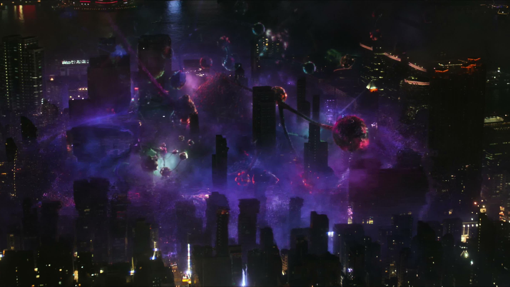

El intento de desconectar el guantelete falla. La energía comienza a expandirse rápidamente y los esfuerzos de los Vengadores no alcanzan para contenerla.
Loki aparece y confiesa que quería utilizar el artefacto para abrir una conexión permanente entre diferentes dimensiones. La entidad cósmica atraviesa el portal y comienza a absorber la energía del Teseracto.
El Doctor Strange logra abrir un último portal para evacuar a los sobrevivientes. Antes de que puedas hacer algo, la Torre de los Vengadores desaparece entre las distorsiones de la realidad.
Despertás en una dimensión desconocida, sin comunicación con la Tierra y sin saber qué ocurrió con tus compañeros.
La misión fracasó. El universo cambió para siempre y los Vengadores parecen estar desaparecidos.